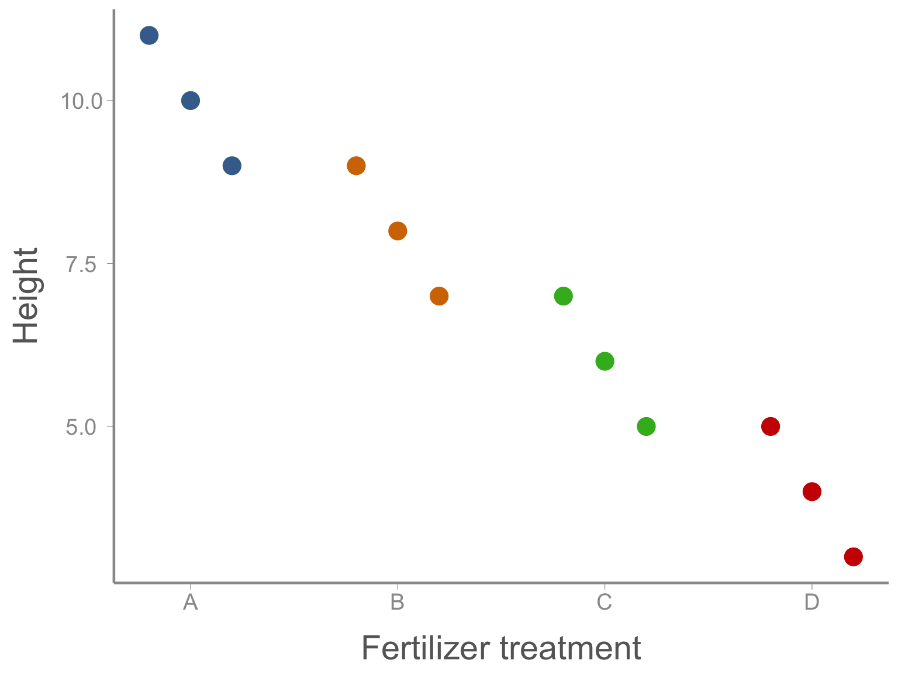
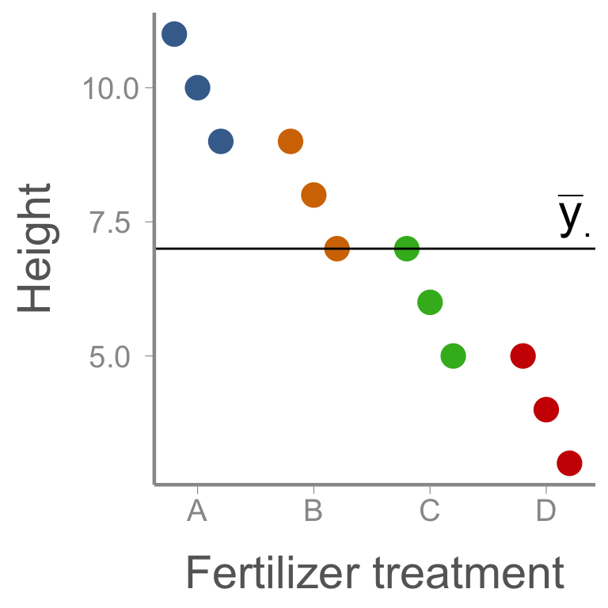
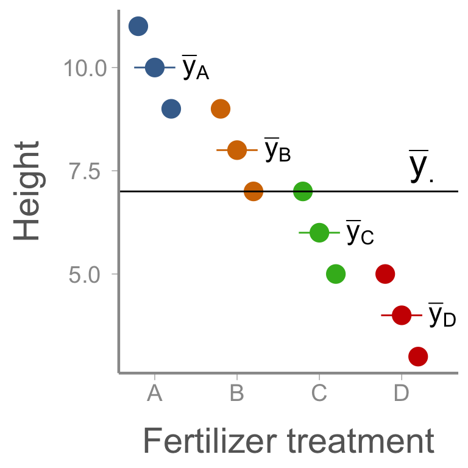
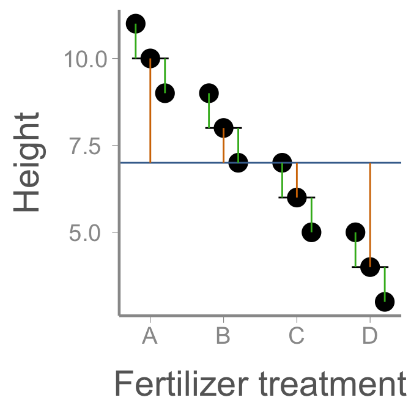
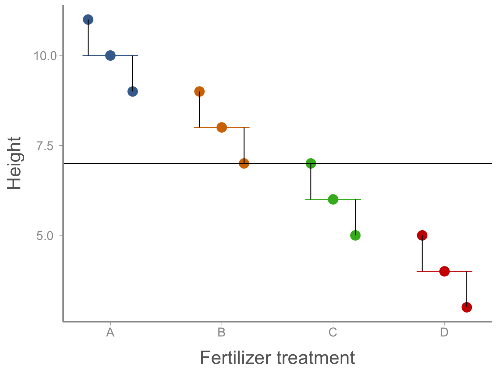
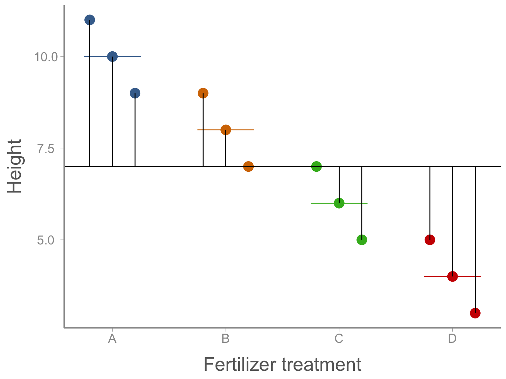

<!DOCTYPE html>
<html lang="en"><head>
<script src="../../site_libs/clipboard/clipboard.min.js"></script>
<script src="../../site_libs/quarto-html/tabby.min.js"></script>
<script src="../../site_libs/quarto-html/popper.min.js"></script>
<script src="../../site_libs/quarto-html/tippy.umd.min.js"></script>
<link href="../../site_libs/quarto-html/tippy.css" rel="stylesheet">
<link href="../../site_libs/quarto-html/light-border.css" rel="stylesheet">
<link href="../../site_libs/quarto-html/quarto-syntax-highlighting-bb62276ab45c84d9efd712f51ff97b5a.css" rel="stylesheet" id="quarto-text-highlighting-styles"><meta charset="utf-8">
  <meta name="generator" content="quarto-1.10.18">

  <title>FANR6750 – anova</title>
  <meta name="apple-mobile-web-app-capable" content="yes">
  <meta name="apple-mobile-web-app-status-bar-style" content="black-translucent">
  <meta name="viewport" content="width=device-width, initial-scale=1.0, maximum-scale=1.0, user-scalable=no, minimal-ui">
  <link rel="stylesheet" href="../../site_libs/revealjs/dist/reset.css">
  <link rel="stylesheet" href="../../site_libs/revealjs/dist/reveal.css">
  <style>
    /* Default styles provided by pandoc.
    ** See https://pandoc.org/MANUAL.html#variables-for-html for config info.
    */
    span.smallcaps{font-variant: small-caps;}
    div.columns{display: flex; gap: 1.5em;}
    div.column{flex: auto;}
    @media screen {
    div.columns{gap: min(4vw, 1.5em);}
    div.column{overflow-x: auto;}
    }
    div.hanging-indent{margin-left: 1.5em; text-indent: -1.5em;}
    ul.task-list{list-style: none;}
    ul.task-list li input[type="checkbox"] {
      width: 0.8em;
      margin: 0 0.8em 0.2em -1em; /* quarto-specific, see https://github.com/quarto-dev/quarto-cli/issues/4556 */ 
      vertical-align: middle;
    }
    /* CSS for syntax highlighting */
    html { -webkit-text-size-adjust: 100%; }
    pre > code.sourceCode { white-space: pre; position: relative; }
    pre > code.sourceCode > span { display: inline-block; line-height: 1.25; }
    pre > code.sourceCode > span:empty { height: 1.2em; }
    .sourceCode { overflow: visible; }
    code.sourceCode > span { color: inherit; text-decoration: inherit; }
    div.sourceCode { margin: 1em 0; }
    pre.sourceCode { margin: 0; }
    @media screen {
    div.sourceCode { overflow: auto; }
    }
    @media print {
    pre > code.sourceCode { white-space: pre-wrap; }
    pre > code.sourceCode > span { text-indent: -5em; padding-left: 5em; }
    }
    pre.numberSource code
      { counter-reset: source-line 0; }
    pre.numberSource code > span
      { position: relative; left: -4em; counter-increment: source-line; }
    pre.numberSource code > span > a:first-child::before
      { content: counter(source-line);
        position: relative; left: -1em; text-align: right; vertical-align: baseline;
        border: none; display: inline-block;
        -webkit-touch-callout: none; -webkit-user-select: none;
        -khtml-user-select: none; -moz-user-select: none;
        -ms-user-select: none; user-select: none;
        padding: 0 4px; width: 4em;
      }
    pre.numberSource { margin-left: 3em;  padding-left: 4px; }
    div.sourceCode
      { color: #24292e;  }
    @media screen {
    pre > code.sourceCode > span > a:first-child::before { text-decoration: underline; }
    }
    code span { color: #24292e; } /* Normal */
    code span.al { color: #ff5555; font-weight: bold; } /* Alert */
    code span.an { color: #6a737d; } /* Annotation */
    code span.at { color: #d73a49; } /* Attribute */
    code span.bn { color: #005cc5; } /* BaseN */
    code span.bu { color: #d73a49; } /* BuiltIn */
    code span.cf { color: #d73a49; } /* ControlFlow */
    code span.ch { color: #032f62; } /* Char */
    code span.cn { color: #005cc5; } /* Constant */
    code span.co { color: #6a737d; } /* Comment */
    code span.cv { color: #6a737d; } /* CommentVar */
    code span.do { color: #6a737d; } /* Documentation */
    code span.dt { color: #d73a49; } /* DataType */
    code span.dv { color: #005cc5; } /* DecVal */
    code span.er { color: #ff5555; text-decoration: underline; } /* Error */
    code span.ex { color: #d73a49; font-weight: bold; } /* Extension */
    code span.fl { color: #005cc5; } /* Float */
    code span.fu { color: #6f42c1; } /* Function */
    code span.im { color: #032f62; } /* Import */
    code span.in { color: #6a737d; } /* Information */
    code span.kw { color: #d73a49; } /* Keyword */
    code span.op { color: #24292e; } /* Operator */
    code span.ot { color: #6f42c1; } /* Other */
    code span.pp { color: #d73a49; } /* Preprocessor */
    code span.re { color: #6a737d; } /* RegionMarker */
    code span.sc { color: #005cc5; } /* SpecialChar */
    code span.ss { color: #032f62; } /* SpecialString */
    code span.st { color: #032f62; } /* String */
    code span.va { color: #e36209; } /* Variable */
    code span.vs { color: #032f62; } /* VerbatimString */
    code span.wa { color: #ff5555; } /* Warning */
  </style>
  <link rel="stylesheet" href="../../site_libs/revealjs/dist/theme/quarto-fc859e93a8aea861b048bf3194d4829c.css">
  <link href="../../site_libs/revealjs/plugin/quarto-line-highlight/line-highlight.css" rel="stylesheet">
  <link href="../../site_libs/revealjs/plugin/reveal-menu/menu.css" rel="stylesheet">
  <link href="../../site_libs/revealjs/plugin/reveal-menu/quarto-menu.css" rel="stylesheet">
  <link href="../../site_libs/revealjs/plugin/quarto-support/footer.css" rel="stylesheet">
  <style type="text/css">
    .reveal div.sourceCode {
      margin: 0;
      overflow: auto;
    }
    .reveal div.hanging-indent {
      margin-left: 1em;
      text-indent: -1em;
    }
    .reveal .slide:not(.center) {
      height: 100%;
    }
    .reveal .slide.scrollable {
      overflow-y: auto;
    }
    .reveal .footnotes {
      height: 100%;
      overflow-y: auto;
    }
    .reveal .slide .absolute {
      position: absolute;
      display: block;
    }
    .reveal .footnotes ol {
      counter-reset: ol;
      list-style-type: none; 
      margin-left: 0;
    }
    .reveal .footnotes ol li:before {
      counter-increment: ol;
      content: counter(ol) ". "; 
    }
    .reveal .footnotes ol li > p:first-child {
      display: inline-block;
    }
    .reveal .slide ul,
    .reveal .slide ol {
      margin-bottom: 0.5em;
    }
    .reveal .slide ul li,
    .reveal .slide ol li {
      margin-top: 0.4em;
      margin-bottom: 0.2em;
    }
    .reveal .slide ul[role="tablist"] li {
      margin-bottom: 0;
    }
    .reveal .slide ul li > *:first-child,
    .reveal .slide ol li > *:first-child {
      margin-block-start: 0;
    }
    .reveal .slide ul li > *:last-child,
    .reveal .slide ol li > *:last-child {
      margin-block-end: 0;
    }
    .reveal .slide .columns:nth-child(3) {
      margin-block-start: 0.8em;
    }
    .reveal blockquote {
      box-shadow: none;
    }
    .reveal .tippy-content>* {
      margin-top: 0.2em;
      margin-bottom: 0.7em;
    }
    .reveal .tippy-content>*:last-child {
      margin-bottom: 0.2em;
    }
    .reveal .slide > img.stretch.quarto-figure-center,
    .reveal .slide > img.r-stretch.quarto-figure-center {
      display: block;
      margin-left: auto;
      margin-right: auto; 
    }
    .reveal .slide > img.stretch.quarto-figure-left,
    .reveal .slide > img.r-stretch.quarto-figure-left  {
      display: block;
      margin-left: 0;
      margin-right: auto; 
    }
    .reveal .slide > img.stretch.quarto-figure-right,
    .reveal .slide > img.r-stretch.quarto-figure-right  {
      display: block;
      margin-left: auto;
      margin-right: 0; 
    }
  </style>
  <script src="../../site_libs/kePrint/kePrint.js"></script>
  <link href="../../site_libs/lightable/lightable.css" rel="stylesheet">
</head>
<body class="quarto-light">
  <div class="reveal">
    <div class="slides">


<section id="lecture-9-linear-models-part-2-categorical-predictor-w-2-levels" class="slide level2 theme-title center">
<h2>LECTURE 9: linear models part 2: categorical predictor w/ &gt;2 levels</h2>
<div class="footer">
<p>FANR 6750<br>
Fall 2026</p>
</div>
</section>
<section id="outline" class="slide level2 theme-inverse smaller">
<h2>Outline</h2>
<p><br></p>
<h3 id="motivating-example">1) Motivating example</h3>
<p><br></p>
<div class="fragment">
<h3 id="extending-the-linear-model">2) Extending the linear model</h3>
<p><br></p>
</div>
<div class="fragment">
<h3 id="dummy-variables-with-2-levels">3) Dummy variables with &gt; 2 levels</h3>
<p><br></p>
</div>
<div class="fragment">
<h3 id="f-tests">4) <em>F</em>-tests</h3>
<p><br></p>
</div>
<div class="fragment">
<h3 id="comparing-linear-model-and-anova-approaches">5) Comparing linear model and ANOVA approaches</h3>
<p><br></p>
</div>
</section>
<section id="categorical-predictors" class="slide level2 smaller">
<h2>Categorical predictors</h2>
<p>In lecture 4, we learned about fitting models with categorical predictors with 1 (measurement error) or 2 (frog) levels</p>
<ul>
<li class="fragment"><p>Linear models with these categorical predictors correspond to one-sample or two-sample <em>t</em>-tests</p></li>
<li class="fragment"><p>Binary categorical predictors are quite common in ecological studies (e.g., male vs female, juvenile vs adult, disturbed vs undisturbed)</p></li>
</ul>
<div class="fragment">
<p>However, you will often encounter categorical predictors with &gt;2 levels</p>
<ul>
<li>What are some examples?</li>
</ul>
</div>
</section>
<section id="motivating-example-1" class="slide level2 smaller">
<h2>Motivating example</h2>
<p>Foresters are studying the effect of 4 different fertilizers (treatments) on the growth of loblolly pine, which are grown on 3 plots (replicates) receiving each treatment. Data are average height per plot after 5 years:</p>
<div class="columns">
<div class="column" style="width:50%;">
<div class="cell" data-layout-align="center">
<div class="cell-output-display">
<table class="table table-condensed caption-top" style="font-size: 18px; width: auto !important; margin-left: auto; margin-right: auto;">
<colgroup>
<col style="width: 20%">
<col style="width: 20%">
<col style="width: 20%">
<col style="width: 20%">
<col style="width: 20%">
</colgroup>
<thead>
<tr class="header">
<th data-quarto-table-cell-role="th" style="text-align: center; empty-cells: hide; border-bottom: hidden;"></th>
<th colspan="4" data-quarto-table-cell-role="th" style="text-align: center; border-bottom: hidden; padding-bottom: 0; padding-left: 3px; padding-right: 3px;"><div style="border-bottom: 1px solid #ddd; padding-bottom: 5px; ">
Treatment
</div></th>
</tr>
<tr class="even">
<th style="text-align: center;" data-quarto-table-cell-role="th">Replicate</th>
<th style="text-align: center;" data-quarto-table-cell-role="th">A</th>
<th style="text-align: center;" data-quarto-table-cell-role="th">B</th>
<th style="text-align: center;" data-quarto-table-cell-role="th">C</th>
<th style="text-align: center;" data-quarto-table-cell-role="th">D</th>
</tr>
</thead>
<tbody>
<tr class="odd">
<td style="text-align: center;">1</td>
<td style="text-align: center;">11</td>
<td style="text-align: center;">9</td>
<td style="text-align: center;">7</td>
<td style="text-align: center;">5</td>
</tr>
<tr class="even">
<td style="text-align: center;">2</td>
<td style="text-align: center;">10</td>
<td style="text-align: center;">8</td>
<td style="text-align: center;">6</td>
<td style="text-align: center;">4</td>
</tr>
<tr class="odd">
<td style="text-align: center;">3</td>
<td style="text-align: center;">9</td>
<td style="text-align: center;">7</td>
<td style="text-align: center;">5</td>
<td style="text-align: center;">3</td>
</tr>
</tbody>
</table>
</div>
</div>
</div><div class="column" style="width:50%;">
<p>Notation</p>
<ul>
<li><p>The number of groups (treatments) is <span class="math inline">\(a=4\)</span></p></li>
<li><p>The number of observations within each group (replicates) is <span class="math inline">\(n=3\)</span></p></li>
<li><p><span class="math inline">\(y_{ij}\)</span> denotes the <span class="math inline">\(j\)</span>th observation from the <span class="math inline">\(i\)</span>th group</p></li>
</ul>
</div></div>
</section>
<section id="a-brief-tangent" class="slide level2 smaller theme-inverse">
<h2>a brief tangent</h2>
<p>What counts as an observation?</p>
<div class="fragment">
<p>Experimental unit</p>
<blockquote>
<p>the physical unit that receives a particular treatment</p>
</blockquote>
</div>
<div class="fragment">
<p>Observational unit</p>
<blockquote>
<p>the physical unit on which measurements are taken</p>
</blockquote>
</div>
<div class="fragment">
<p>These are not always the same!</p>
</div>
<div class="fragment">
<p>Examples</p>
<ul>
<li class="fragment"><p>Agricultural fields given different fertilizer, crop yield measured</p></li>
<li class="fragment"><p>Rats given different diets, disease state measured</p></li>
<li class="fragment"><p>Microcosm given different predator abundance, tadpole growth measured</p></li>
</ul>
</div>
</section>
<section id="motivating-example-2" class="slide level2 smaller">
<h2>Motivating example</h2>
<p><span class="highlight">Question</span>: Is there a difference in growth among the four treatment groups?</p>
<div class="fragment">
<div class="cell" data-layout-align="center">
<div class="cell-output-display">
<div class="quarto-figure quarto-figure-center">
<figure>
<p></p>
</figure>
</div>
</div>
</div>
</div>
</section>
<section id="motivating-example-3" class="slide level2 smaller">
<h2>Motivating example</h2>
<p>Hypotheses:</p>
<ul>
<li><p><span class="math inline">\(\large H_0 : \mu_A = \mu_B = \mu_C = \mu_D\)</span></p></li>
<li><p><span class="math inline">\(\large H_a :\)</span> At least one inequality</p></li>
</ul>
<div class="fragment">
<p>How should we test the null?</p>
</div>
<div class="fragment">
<ul>
<li>We could do this using 6 <em>t</em>-tests</li>
</ul>
</div>
<div class="fragment">
<ul>
<li>But this would alter the overall (experiment-wise) <span class="math inline">\(\alpha\)</span> level because each individual test has a chance (usually <span class="math inline">\(\alpha = 0.05\)</span>) of incorrectly rejecting a true null hypothesis, and this is multiplied when multiple tests are used<a href="#/footnotes" class="footnote-ref" id="fnref1" role="doc-noteref" data-footnote-href="#/fn1" onclick=""><sup>1</sup></a><br>
</li>
</ul>
</div>
<aside></aside></section>
<section id="extending-the-linear-model-1" class="slide level2 smaller">
<h2>Extending the linear model</h2>
<p>Fortunately, extending the previous linear model to include additional predictor levels is “straightforward”</p>
<ul>
<li>The model looks familiar</li>
</ul>
<p><span class="math display">\[\large y_{ij} = \beta_0 + \beta_ix_{ij} + \epsilon_{ij}\]</span></p>
<p><span class="math display">\[\large \epsilon_{ij} \sim normal(0, \sigma)\]</span></p>
<ul>
<li class="fragment"><p>What’s tricky is how we code <span class="math inline">\(\large x_{ij}\)</span> when it is more than just 0 or 1</p></li>
<li class="fragment"><p>Fortunately, what we learned about how <code>R</code> codes dummy variables will help</p></li>
</ul>
</section>
<section id="dummy-variable-coding" class="slide level2 smaller">
<h2>Dummy variable coding</h2>
<p>View a subset (rows 1, 4, 7, &amp; 10) of the data:</p>
<div class="cell" data-layout-align="center">
<div class="code-copy-outer-scaffold"><div class="sourceCode cell-code" id="cb1"><pre class="sourceCode numberSource r number-lines code-with-copy"><code class="sourceCode r"><span id="cb1-1"><a aria-label="1"></a><span class="fu">data</span>(loblollydata)</span>
<span id="cb1-2"><a aria-label="2"></a>loblollydata[<span class="fu">c</span>(<span class="dv">1</span>,<span class="dv">4</span>,<span class="dv">7</span>,<span class="dv">10</span>),]</span></code></pre></div><button title="Copy to Clipboard" class="code-copy-button"><i class="bi"></i></button></div>
<div class="cell-output cell-output-stdout">
<pre><code>   Treatment Replicate Height
1          A         1     11
4          B         1      9
7          C         1      7
10         D         1      5</code></pre>
</div>
</div>
<div class="fragment">
<p>View the corresponding rows of the <em>model matrix</em><a href="#/footnotes" class="footnote-ref" id="fnref2" role="doc-noteref" data-footnote-href="#/fn2" onclick=""><sup>2</sup></a></p>
<div class="cell" data-layout-align="center">
<div class="code-copy-outer-scaffold"><div class="sourceCode cell-code" id="cb3"><pre class="sourceCode numberSource r number-lines code-with-copy"><code class="sourceCode r"><span id="cb3-1"><a aria-label="1"></a>fit1 <span class="ot">&lt;-</span> <span class="fu">lm</span>(Height <span class="sc">~</span> Treatment, <span class="at">data =</span> loblollydata)</span>
<span id="cb3-2"><a aria-label="2"></a></span>
<span id="cb3-3"><a aria-label="3"></a><span class="fu">model.matrix</span>(fit1)[<span class="fu">c</span>(<span class="dv">1</span>,<span class="dv">4</span>,<span class="dv">7</span>,<span class="dv">10</span>),]</span></code></pre></div><button title="Copy to Clipboard" class="code-copy-button"><i class="bi"></i></button></div>
<div class="cell-output cell-output-stdout">
<pre><code>   (Intercept) TreatmentB TreatmentC TreatmentD
1            1          0          0          0
4            1          1          0          0
7            1          0          1          0
10           1          0          0          1</code></pre>
</div>
</div>
</div>
<aside></aside></section>
<section id="dummy-variable-coding-1" class="slide level2 smaller">
<h2>Dummy variable coding</h2>
<div class="cell" data-layout-align="center">
<div class="code-copy-outer-scaffold"><div class="sourceCode cell-code" id="cb5"><pre class="sourceCode numberSource r number-lines code-with-copy"><code class="sourceCode r"><span id="cb5-1"><a aria-label="1"></a><span class="fu">model.matrix</span>(fit1)[<span class="fu">c</span>(<span class="dv">1</span>,<span class="dv">4</span>,<span class="dv">7</span>,<span class="dv">10</span>),]</span></code></pre></div><button title="Copy to Clipboard" class="code-copy-button"><i class="bi"></i></button></div>
<div class="cell-output cell-output-stdout">
<pre><code>   (Intercept) TreatmentB TreatmentC TreatmentD
1            1          0          0          0
4            1          1          0          0
7            1          0          1          0
10           1          0          0          1</code></pre>
</div>
</div>
<p>The model matrix has one row for each observation and one column for every parameter in the model</p>
<ul>
<li>How many parameters is this model estimating?</li>
</ul>
<div class="fragment">
<p>Multiplying the model matrix by the parameter matrix gives the expected value of each observation<a href="#/footnotes" class="footnote-ref" id="fnref3" role="doc-noteref" data-footnote-href="#/fn3" onclick=""><sup>3</sup></a></p>
</div>
<div class="fragment">
<p><span class="math display">\[\large E[y_{ij}] = \beta_0 + \beta_1 I(B)_{ij} + \beta_2 I(C)_{ij} + \beta_3 I(D)_{ij}\]</span></p>
<p>where <span class="math inline">\(I(B/C/D)_{ij}\)</span> are dummy variables (0/1 depending on treatment)</p>
<ul>
<li class="fragment">What is the interpretation of each parameter?</li>
</ul>
</div>
<aside></aside></section>
<section id="motivating-example-4" class="slide level2 smaller">
<h2>Motivating example</h2>
<div class="cell" data-layout-align="center">
<div class="code-copy-outer-scaffold"><div class="sourceCode cell-code" id="cb7"><pre class="sourceCode numberSource r number-lines code-with-copy"><code class="sourceCode r"><span id="cb7-1"><a aria-label="1"></a>broom<span class="sc">::</span><span class="fu">tidy</span>(fit1)</span></code></pre></div><button title="Copy to Clipboard" class="code-copy-button"><i class="bi"></i></button></div>
<div class="cell-output cell-output-stdout">
<pre><code># A tibble: 4 × 5
  term        estimate std.error statistic     p.value
  &lt;chr&gt;          &lt;dbl&gt;     &lt;dbl&gt;     &lt;dbl&gt;       &lt;dbl&gt;
1 (Intercept)    10.0      0.577     17.3  0.000000126
2 TreatmentB     -2.00     0.816     -2.45 0.0400     
3 TreatmentC     -4.00     0.816     -4.90 0.00120    
4 TreatmentD     -6.00     0.816     -7.35 0.0000801  </code></pre>
</div>
</div>
<ul>
<li class="fragment"><p>Be sure you understand what each parameter means!</p></li>
<li class="fragment"><p><em>t</em>-statistics and <em>p</em>-values are calculated and interpreted in the same way as the frog example</p></li>
<li class="fragment"><p>But wait, the null hypothesis was <span class="math inline">\(\mu_A = \mu_B = \mu_C = \mu_D\)</span></p></li>
</ul>
</section>
<section id="regression-f-statistic" class="slide level2 smaller">
<h2>Regression f-statistic</h2>
<div class="cell" data-layout-align="center">
<div class="code-copy-outer-scaffold"><div class="sourceCode cell-code" id="cb9"><pre class="sourceCode numberSource r number-lines code-with-copy"><code class="sourceCode r"><span id="cb9-1"><a aria-label="1"></a><span class="fu">summary</span>(fit1)</span></code></pre></div><button title="Copy to Clipboard" class="code-copy-button"><i class="bi"></i></button></div>
<div class="cell-output cell-output-stdout">
<pre><code>
Call:
lm(formula = Height ~ Treatment, data = loblollydata)

Residuals:
   Min     1Q Median     3Q    Max 
    -1     -1      0      1      1 

Coefficients:
            Estimate Std. Error t value Pr(&gt;|t|)    
(Intercept)   10.000      0.577   17.32  1.3e-07 ***
TreatmentB    -2.000      0.816   -2.45   0.0400 *  
TreatmentC    -4.000      0.816   -4.90   0.0012 ** 
TreatmentD    -6.000      0.816   -7.35  8.0e-05 ***
---
Signif. codes:  0 '***' 0.001 '**' 0.01 '*' 0.05 '.' 0.1 ' ' 1

Residual standard error: 1 on 8 degrees of freedom
Multiple R-squared:  0.882, Adjusted R-squared:  0.838 
F-statistic:   20 on 3 and 8 DF,  p-value: 0.000449</code></pre>
</div>
</div>
<p>Notice the last line of this output. Where did this <em>p</em>-value come from and what does it mean?</p>
</section>
<section id="regression-f-statistic-1" class="slide level2 smaller">
<h2>Regression f-statistic</h2>
<p>The <em>F</em>-statistic tests whether all regression coefficients (other than the intercept) are all 0</p>
<ul>
<li><p><span class="math inline">\(H_0\)</span>: All regression coefficients are 0</p></li>
<li><p><span class="math inline">\(H_A\)</span>: At least one regression coefficient is not 0</p></li>
</ul>
<div class="fragment">
<p><em>F</em>-statistics are the ratio of <em>sample variances</em></p>
<p><span class="math display">\[F = \frac{s^2_A}{s^2_B}\]</span></p>
<ul>
<li><p>Null hypothesis is that population variances are equal ( <span class="math inline">\(\sigma^2_A = \sigma^2_B\)</span> )</p></li>
<li><p>Always positive (variances cannot be negative)</p></li>
<li><p>Usually &gt; 1 (by putting larger variance in the numerator)</p></li>
</ul>
</div>
<div class="fragment">
<p>Where do the variances come from in the linear model and what do they tell us about differences among groups?</p>
</div>
</section>
<section id="regression-f-statistic-2" class="slide level2 smaller">
<h2>Regression f-statistic</h2>
<p>To understand why the test is based on variance, it is helpful to consider several types of means:</p>
<div class="columns">
<div class="fragment column" style="width:50%;">
<ul>
<li>Grand mean</li>
</ul>
<p><span class="math display">\[\large \bar{y}. = \frac{\sum_i \sum_jy_{ij}}{a \times n}\]</span></p>
</div><div class="fragment column" style="width:50%;">
<div class="cell" data-layout-align="center">
<div class="cell-output-display">
<div class="quarto-figure quarto-figure-center">
<figure>
<p></p>
</figure>
</div>
</div>
</div>
</div></div>
</section>
<section id="regression-f-statistic-3" class="slide level2 smaller">
<h2>Regression f-statistic</h2>
<p>To understand why the test is based on variance, it is helpful to consider several types of means:</p>
<div class="columns">
<div class="fragment column" style="width:50%;">
<ul>
<li>Grand mean</li>
</ul>
<p><span class="math display">\[\large \bar{y}. = \frac{\sum_i \sum_jy_{ij}}{a \times n}\]</span></p>
<ul>
<li>Group means</li>
</ul>
<p><span class="math display">\[\large \bar{y}_i = \frac{\sum_j y_{ij}}{n}\]</span></p>
</div><div class="fragment column" style="width:50%;">
<div class="cell" data-layout-align="center">
<div class="cell-output-display">
<div class="quarto-figure quarto-figure-center">
<figure>
<p></p>
</figure>
</div>
</div>
</div>
</div></div>
</section>
<section id="regression-f-statistic-4" class="slide level2 smaller">
<h2>Regression f-statistic</h2>
<p>To understand why the test is based on variance, it is helpful to consider several types of means:</p>
<div class="columns">
<div class="column" style="width:50%;">
<ul>
<li>Grand mean</li>
</ul>
<p><span class="math display">\[\large \bar{y}. = \frac{\sum_i \sum_jy_{ij}}{a \times n}\]</span></p>
<ul>
<li>Group means</li>
</ul>
<p><span class="math display">\[\large \bar{y}_i = \frac{\sum_j y_{ij}}{n}\]</span></p>
</div><div class="fragment column" style="width:50%;">
<p>We can now decompose the observations as<a href="#/footnotes" class="footnote-ref" id="fnref4" role="doc-noteref" data-footnote-href="#/fn4" onclick=""><sup>4</sup></a>:</p>
<p><span class="math display">\[y_{ij} = \color{#446E9B}{\bar{y}.} + \color{#D47500}{(\bar{y}_i - \bar{y}.)} + \color{#3CB521}{(y_{ij} - \bar{y}_i)}\]</span></p>
<div class="cell" data-layout-align="center">
<div class="cell-output-display">
<div class="quarto-figure quarto-figure-center">
<figure>
<p></p>
</figure>
</div>
</div>
</div>
</div></div>
<aside></aside></section>
<section id="the-additive-model" class="slide level2 smaller">
<h2>The additive model</h2>
<p>The decomposition:</p>
<p><span class="math display">\[\large y_{ij} = \color{#446E9B}{\bar{y}.} + \color{#D47500}{(\bar{y}_i - \bar{y}.)} + \color{#3CB521}{(y_{ij} - \bar{y}_i)}\]</span></p>
<div class="fragment">
<p>The additive model:</p>
<p><span class="math display">\[\large y_{ij} = \color{#446E9B}{\mu} + \color{#D47500}{\alpha_i} + \color{#3CB521}{\epsilon_{ij}}\]</span></p>
<p>where</p>
<p><span class="math display">\[\large \epsilon_{ij} \sim normal(0, \sigma^2)\]</span></p>
</div>
</section>
<section id="the-additive-model-1" class="slide level2 smaller">
<h2>The additive model</h2>
<p><span class="math display">\[\large y_{ij} = \mu + \alpha_i + \epsilon_{ij}\]</span></p>
<p><span class="math display">\[\large \epsilon_{ij} \sim normal(0, \sigma^2)\]</span></p>
<p><span class="highlight">Notes:</span></p>
<ul>
<li class="fragment"><p><span class="math inline">\(\mu\)</span> is the grand mean of the population, estimated by <span class="math inline">\(\bar{y}.\)</span></p></li>
<li class="fragment"><p><span class="math inline">\(\alpha_i\)</span> is the effect of treatment <em>i</em>, estimated by <span class="math inline">\(\bar{y}_i - \bar{y}.\)</span></p>
<ul>
<li class="fragment"><p>It is the deviation of the group mean from the grand mean</p></li>
<li class="fragment"><p>If all <span class="math inline">\(\alpha_i = 0\)</span>, there is no treatment effect</p></li>
<li class="fragment"><p>Thus, we can re-write the null hypothesis <span class="math inline">\(H_0 : \alpha_1 = \alpha_2=... =\alpha_a = 0\)</span></p></li>
</ul></li>
<li class="fragment"><p><span class="math inline">\(\epsilon_{ij}\)</span> is the residual error, estimated by <span class="math inline">\(y_{ij} - \bar{y}_i\)</span></p>
<ul>
<li class="fragment">It is the unexplained (random) deviation of the observation from the group mean</li>
</ul></li>
<li class="fragment"><p>Note that this is just a re-arrangement of the linear model</p></li>
</ul>
</section>
<section id="sums-of-squares" class="slide level2 smaller">
<h2>Sums of squares</h2>
<p>Back to the <em>F</em>-test. Where to the variances for the test come from and how do they related to the null hypothesis?</p>
<ul>
<li class="fragment"><p>To answer those questions, we need to quantify <em>where</em> the variation in our data comes from</p></li>
<li class="fragment"><p>To do that, we calculate <em>sums of squares</em></p></li>
</ul>
<div class="fragment">
<p>First, we calculate the sums of squares <em>among</em>, which quantifies variation among treatment groups<a href="#/footnotes" class="footnote-ref" id="fnref5" role="doc-noteref" data-footnote-href="#/fn5" onclick=""><sup>5</sup></a></p>
<p><span class="math display">\[\large SS_A = n \sum_i (\bar{y}_i - \bar{y}.)^2\]</span></p>
</div>
<aside></aside></section>
<section id="motivating-example-5" class="slide level2 smaller">
<h2>Motivating example</h2>
<p><span class="highlight">Question</span>: Is there a difference in growth among the four treatment groups?</p>

</section>
<section id="sums-of-squares-1" class="slide level2 smaller">
<h2>Sums of squares</h2>
<p>Variation among groups</p>
<p><span class="math display">\[\large SS_A = n \sum_i (\bar{y}_i - \bar{y}.)^2\]</span></p>
<div class="fragment">
<p>Next, we calculate the sums of squares <em>within</em>, which quantifies variation within treatment groups</p>
<p><span class="math display">\[\large SS_W = \sum_i \sum_j (y_{ij} - \bar{y}_i)^2\]</span></p>
</div>
</section>
<section id="motivating-example-6" class="slide level2 smaller">
<h2>Motivating example</h2>
<p><span class="smaller">Question</span>: Is there a difference in growth among the four treatment groups?</p>

</section>
<section id="sums-of-squares-2" class="slide level2 smaller">
<h2>Sums of squares</h2>
<p>Variation among groups</p>
<p><span class="math display">\[\large SS_A = n \sum_i (\bar{y}_i - \bar{y}.)^2\]</span></p>
<p>Variation within groups</p>
<p><span class="math display">\[\large SS_W = \sum_i \sum_j (y_{ij} - \bar{y}_i)^2\]</span></p>
<p>Note that we can also calculate the total variation in our observations<a href="#/footnotes" class="footnote-ref" id="fnref6" role="doc-noteref" data-footnote-href="#/fn6" onclick=""><sup>6</sup></a></p>
<p><span class="math display">\[\large SS_T =  \sum_i \sum_j (y_{ij} - \bar{y}.)^2= SS_A + SS_W\]</span></p>
<aside></aside></section>
<section id="motivating-example-7" class="slide level2 smaller">
<h2>Motivating example</h2>
<p><span class="highlight">Question</span>: Is there a difference in growth among the four treatment groups?</p>

</section>
<section id="mean-squares" class="slide level2 smaller">
<h2>Mean squares</h2>
<p>The <em>F</em>-test is based on variances. Sums of squares quantify variation but they are not technically variances.</p>
<p>To covert the sums of squares to variances, divide by the degrees of freedom:<a href="#/footnotes" class="footnote-ref" id="fnref7" role="doc-noteref" data-footnote-href="#/fn7" onclick=""><sup>7</sup></a></p>
<div class="fragment">
<p>Mean squares among</p>
<p><span class="math display">\[\large MS_A = \frac{SS_A}{a-1}\]</span></p>
</div>
<div class="fragment">
<p>Mean squares within</p>
<p><span class="math display">\[\large MS_W = \frac{SS_W}{a(n-1)}\]</span></p>
</div>
<aside></aside></section>
<section id="f-statistic" class="slide level2 smaller">
<h2>f-statistic</h2>
<p>From the mean squares, we can finally calculate the <em>F</em>-statistic:</p>
<p><span class="math display">\[\large F = \frac{MS_A}{MS_W}\]</span></p>
<div class="fragment">
<p><span class="highlight">Note</span>:</p>
<ul>
<li class="fragment"><p><em>F</em> is a ratio measuring the variance among groups to the variance within groups</p></li>
<li class="fragment"><p>If there is a large treatment effect, what happens to <span class="math inline">\(MS_A\)</span>?</p></li>
<li class="fragment"><p>If there is little residual variation, what happens to <span class="math inline">\(MS_W\)</span>?</p></li>
<li class="fragment"><p>Large values of <span class="math inline">\(F\)</span> indicate treatment effects are large relative to residual variation, but can we conclude there is a treatment effect?</p></li>
</ul>
</div>
</section>
<section id="the-f-distribution" class="slide level2 smaller">
<h2>The f-distribution</h2>
<p><span class="highlight">If the null hypothesis is true</span> (<span class="math inline">\(\sigma^2_A = \sigma^2_B\)</span>), the ratio of sample variances follows an <em>F</em>-distribution</p>
<div class="columns">
<div class="fragment column" style="width:50%;">
<p>Properties:</p>
<ul>
<li><p><span class="math inline">\(F &gt; 0\)</span></p></li>
<li><p><span class="math inline">\(F\)</span>-distribution is not symmetrical</p></li>
<li><p>Shape of distribution depends on an ordered pair of degrees of freedom, <span class="math inline">\(df_A\)</span> and <span class="math inline">\(df_B\)</span></p></li>
</ul>
</div><div class="fragment column" style="width:50%;">
<div class="cell" data-layout-align="center">
<div class="cell-output-display">
<div class="quarto-figure quarto-figure-center">
<figure>
<p></p>
</figure>
</div>
</div>
</div>
</div></div>
</section>
<section id="the-f-distribution-1" class="slide level2 smaller">
<h2>The f-distribution</h2>
<p><br></p>

<p>Just like the <em>t</em>-distribution, we can use the <em>F</em>-distribution to calculate <em>p</em>-values and test the null hypothesis that the variances are equal</p>
</section>
<section id="analysis-of-variance" class="slide level2 smaller">
<h2>Analysis of variance</h2>
<p>Using the <em>F</em>-statistic to test whether there is a treatment effect is commonly referred to as <em>Analysis of Variance</em> (ANOVA)</p>
<ul>
<li class="fragment"><p>Especially in experimental settings, ANOVA is very commonly used</p></li>
<li class="fragment"><p>When treated as an ANOVA, the model is usually presented in a table providing the degrees of freedom, sums of squares, mean squares, <em>F</em>-statistic, and <em>p</em>-value</p></li>
<li class="fragment"><p>The linear model approach is increasingly common, especially in observational settings</p></li>
<li class="fragment"><p>From a practical standpoint, the linear model and ANOVA approaches provide exactly the same information, just presented in different ways (just like the linear model vs t-test we saw previously)</p></li>
</ul>
</section>
<section id="worked-example" class="slide level2 smaller">
<h2>Worked example</h2>
<p>Suppose we are interested in the effect of elevation on the abundance of Canada Warblers</p>
<div class="columns">
<div class="fragment column" style="width:50%;">
<div class="quarto-figure quarto-figure-center">
<figure>
<p></p>
</figure>
</div>
</div><div class="fragment column" style="width:50%;">
<div class="cell" data-layout-align="center">
<div class="cell-output-display">
<table class="table table-condensed caption-top" style="font-size: 14px; width: auto !important; margin-left: auto; margin-right: auto;">
<colgroup>
<col style="width: 25%">
<col style="width: 25%">
<col style="width: 25%">
<col style="width: 25%">
</colgroup>
<thead>
<tr class="header">
<th data-quarto-table-cell-role="th" style="text-align: center; empty-cells: hide; border-bottom: hidden;"></th>
<th colspan="3" data-quarto-table-cell-role="th" style="text-align: center; border-bottom: hidden; padding-bottom: 0; padding-left: 3px; padding-right: 3px;"><div style="border-bottom: 1px solid #ddd; padding-bottom: 5px; ">
Elevation
</div></th>
</tr>
<tr class="even">
<th style="text-align: center;" data-quarto-table-cell-role="th">Replicate</th>
<th style="text-align: center;" data-quarto-table-cell-role="th">Low</th>
<th style="text-align: center;" data-quarto-table-cell-role="th">Medium</th>
<th style="text-align: center;" data-quarto-table-cell-role="th">High</th>
</tr>
</thead>
<tbody>
<tr class="odd">
<td style="text-align: center;">1</td>
<td style="text-align: center;">1</td>
<td style="text-align: center;">2</td>
<td style="text-align: center;">4</td>
</tr>
<tr class="even">
<td style="text-align: center;">2</td>
<td style="text-align: center;">3</td>
<td style="text-align: center;">0</td>
<td style="text-align: center;">7</td>
</tr>
<tr class="odd">
<td style="text-align: center;">3</td>
<td style="text-align: center;">0</td>
<td style="text-align: center;">4</td>
<td style="text-align: center;">5</td>
</tr>
<tr class="even">
<td style="text-align: center;">4</td>
<td style="text-align: center;">2</td>
<td style="text-align: center;">3</td>
<td style="text-align: center;">5</td>
</tr>
</tbody>
</table>
</div>
</div>
</div></div>
</section>
<section id="worked-example-1" class="slide level2 smaller">
<h2>Worked example</h2>
<div class="cell" data-layout-align="center">
<div class="code-copy-outer-scaffold"><div class="sourceCode cell-code" id="cb11"><pre class="sourceCode numberSource r number-lines code-with-copy"><code class="sourceCode r"><span id="cb11-1"><a aria-label="1"></a><span class="fu">data</span>(warblerdata)</span>
<span id="cb11-2"><a aria-label="2"></a></span>
<span id="cb11-3"><a aria-label="3"></a>fit.lm <span class="ot">&lt;-</span> <span class="fu">lm</span>(Count <span class="sc">~</span> Elevation, <span class="at">data =</span> warblerdata)</span>
<span id="cb11-4"><a aria-label="4"></a></span>
<span id="cb11-5"><a aria-label="5"></a><span class="fu">summary</span>(fit.lm)</span></code></pre></div><button title="Copy to Clipboard" class="code-copy-button"><i class="bi"></i></button></div>
<div class="cell-output cell-output-stdout">
<pre><code>
Call:
lm(formula = Count ~ Elevation, data = warblerdata)

Residuals:
   Min     1Q Median     3Q    Max 
-2.250 -0.688 -0.250  0.938  1.750 

Coefficients:
                Estimate Std. Error t value Pr(&gt;|t|)    
(Intercept)        5.250      0.717    7.32  4.5e-05 ***
ElevationLow      -3.750      1.014   -3.70   0.0049 ** 
ElevationMedium   -3.000      1.014   -2.96   0.0160 *  
---
Signif. codes:  0 '***' 0.001 '**' 0.01 '*' 0.05 '.' 0.1 ' ' 1

Residual standard error: 1.43 on 9 degrees of freedom
Multiple R-squared:  0.63,  Adjusted R-squared:  0.548 
F-statistic: 7.66 on 2 and 9 DF,  p-value: 0.0114</code></pre>
</div>
</div>
</section>
<section id="worked-example-2" class="slide level2 smaller">
<h2>Worked example</h2>
<div class="cell" data-layout-align="center">
<div class="code-copy-outer-scaffold"><div class="sourceCode cell-code" id="cb13"><pre class="sourceCode numberSource r number-lines code-with-copy"><code class="sourceCode r"><span id="cb13-1"><a aria-label="1"></a><span class="fu">data</span>(warblerdata)</span>
<span id="cb13-2"><a aria-label="2"></a></span>
<span id="cb13-3"><a aria-label="3"></a>fit.aov <span class="ot">&lt;-</span> <span class="fu">aov</span>(Count <span class="sc">~</span> Elevation, <span class="at">data =</span> warblerdata)</span>
<span id="cb13-4"><a aria-label="4"></a></span>
<span id="cb13-5"><a aria-label="5"></a><span class="fu">summary</span>(fit.aov)</span></code></pre></div><button title="Copy to Clipboard" class="code-copy-button"><i class="bi"></i></button></div>
<div class="cell-output cell-output-stdout">
<pre><code>            Df Sum Sq Mean Sq F value Pr(&gt;F)  
Elevation    2   31.5   15.75    7.66  0.011 *
Residuals    9   18.5    2.06                 
---
Signif. codes:  0 '***' 0.001 '**' 0.01 '*' 0.05 '.' 0.1 ' ' 1</code></pre>
</div>
</div>
<p><span class="highlight">Note</span>:</p>
<ul>
<li><p>The row named for the treatment variable (e.g., <code>Elevation</code>) is the <em>among</em> group variation</p></li>
<li><p>The row named <code>Residuals</code> is the <em>within</em> group variation</p></li>
<li><p>The degrees of freedom, <em>F</em>-statistic, and <em>p</em>-value are <span class="highlight">exactly</span> the same as returned by <code>lm()</code><a href="#/footnotes" class="footnote-ref" id="fnref8" role="doc-noteref" data-footnote-href="#/fn8" onclick=""><sup>8</sup></a></p></li>
</ul>
<aside></aside></section>
<section id="anova-table-from-lm" class="slide level2 smaller">
<h2>Anova table from <code>lm</code></h2>
<p>In case you want more detail about the relationship between <code>lm</code> and <code>aov</code> output:</p>
<ul>
<li><code>lm()</code> function also returns residuals (e.g., <span class="math inline">\(y_i - E[y_i]\)</span>)</li>
</ul>
<div class="cell" data-layout-align="center">
<div class="code-copy-outer-scaffold"><div class="sourceCode cell-code" id="cb15"><pre class="sourceCode numberSource r number-lines code-with-copy"><code class="sourceCode r"><span id="cb15-1"><a aria-label="1"></a>fit.lm<span class="sc">$</span>residual</span></code></pre></div><button title="Copy to Clipboard" class="code-copy-button"><i class="bi"></i></button></div>
<div class="cell-output cell-output-stdout">
<pre><code>    1     2     3     4     5     6     7     8     9    10    11    12 
-0.50  1.50 -1.50  0.50 -0.25 -2.25  1.75  0.75 -1.25  1.75 -0.25 -0.25 </code></pre>
</div>
</div>
<ul>
<li>Residual sum of squares</li>
</ul>
<div class="cell" data-layout-align="center">
<div class="code-copy-outer-scaffold"><div class="sourceCode cell-code" id="cb17"><pre class="sourceCode numberSource r number-lines code-with-copy"><code class="sourceCode r"><span id="cb17-1"><a aria-label="1"></a><span class="fu">sum</span>(fit.lm<span class="sc">$</span>residuals<span class="sc">^</span><span class="dv">2</span>)</span></code></pre></div><button title="Copy to Clipboard" class="code-copy-button"><i class="bi"></i></button></div>
<div class="cell-output cell-output-stdout">
<pre><code>[1] 18.5</code></pre>
</div>
</div>
<ul>
<li>Residual mean square</li>
</ul>
<div class="cell" data-layout-align="center">
<div class="code-copy-outer-scaffold"><div class="sourceCode cell-code" id="cb19"><pre class="sourceCode numberSource r number-lines code-with-copy"><code class="sourceCode r"><span id="cb19-1"><a aria-label="1"></a><span class="fu">sum</span>(fit.lm<span class="sc">$</span>residuals<span class="sc">^</span><span class="dv">2</span>)<span class="sc">/</span><span class="dv">9</span></span></code></pre></div><button title="Copy to Clipboard" class="code-copy-button"><i class="bi"></i></button></div>
<div class="cell-output cell-output-stdout">
<pre><code>[1] 2.056</code></pre>
</div>
</div>
</section>
<section id="anova-table-from-lm-1" class="slide level2 smaller">
<h2>Anova table from <code>lm</code></h2>
<p>In case you want more detail about the relationship between <code>lm</code> and <code>aov</code> output:</p>
<p>What about among group variation?</p>
<div class="cell" data-layout-align="center">
<div class="code-copy-outer-scaffold"><div class="sourceCode cell-code" id="cb21"><pre class="sourceCode numberSource r number-lines code-with-copy"><code class="sourceCode r"><span id="cb21-1"><a aria-label="1"></a>fit.lm<span class="sc">$</span>fitted.values</span></code></pre></div><button title="Copy to Clipboard" class="code-copy-button"><i class="bi"></i></button></div>
<div class="cell-output cell-output-stdout">
<pre><code>   1    2    3    4    5    6    7    8    9   10   11   12 
1.50 1.50 1.50 1.50 2.25 2.25 2.25 2.25 5.25 5.25 5.25 5.25 </code></pre>
</div>
</div>
<ul>
<li>Treatment sum of squares</li>
</ul>
<div class="cell" data-layout-align="center">
<div class="code-copy-outer-scaffold"><div class="sourceCode cell-code" id="cb23"><pre class="sourceCode numberSource r number-lines code-with-copy"><code class="sourceCode r"><span id="cb23-1"><a aria-label="1"></a><span class="fu">sum</span>((fit.lm<span class="sc">$</span>fitted.values <span class="sc">-</span> <span class="fu">mean</span>(fit.lm<span class="sc">$</span>fitted.values))<span class="sc">^</span><span class="dv">2</span>)</span></code></pre></div><button title="Copy to Clipboard" class="code-copy-button"><i class="bi"></i></button></div>
<div class="cell-output cell-output-stdout">
<pre><code>[1] 31.5</code></pre>
</div>
</div>
<ul>
<li>Treatment mean square</li>
</ul>
<div class="cell" data-layout-align="center">
<div class="code-copy-outer-scaffold"><div class="sourceCode cell-code" id="cb25"><pre class="sourceCode numberSource r number-lines code-with-copy"><code class="sourceCode r"><span id="cb25-1"><a aria-label="1"></a><span class="fu">sum</span>((fit.lm<span class="sc">$</span>fitted.values <span class="sc">-</span> <span class="fu">mean</span>(fit.lm<span class="sc">$</span>fitted.values))<span class="sc">^</span><span class="dv">2</span>)<span class="sc">/</span><span class="dv">2</span></span></code></pre></div><button title="Copy to Clipboard" class="code-copy-button"><i class="bi"></i></button></div>
<div class="cell-output cell-output-stdout">
<pre><code>[1] 15.75</code></pre>
</div>
</div>
</section>
<section id="anova-table-from-lm-2" class="slide level2 smaller">
<h2>Anova table from <code>lm</code></h2>
<p>In case you want more detail about the relationship between <code>lm</code> and <code>aov</code> output:</p>
<p><em>F</em>-statistic and <em>p</em>-value<a href="#/footnotes" class="footnote-ref" id="fnref9" role="doc-noteref" data-footnote-href="#/fn9" onclick=""><sup>9</sup></a></p>
<div class="cell" data-layout-align="center">
<div class="code-copy-outer-scaffold"><div class="sourceCode cell-code" id="cb27"><pre class="sourceCode numberSource r number-lines code-with-copy"><code class="sourceCode r"><span id="cb27-1"><a aria-label="1"></a>MSa <span class="ot">&lt;-</span> <span class="fu">sum</span>((fit.lm<span class="sc">$</span>fitted.values <span class="sc">-</span> <span class="fu">mean</span>(fit.lm<span class="sc">$</span>fitted.values))<span class="sc">^</span><span class="dv">2</span>)<span class="sc">/</span><span class="dv">2</span></span>
<span id="cb27-2"><a aria-label="2"></a>MSe <span class="ot">&lt;-</span> <span class="fu">sum</span>(fit.lm<span class="sc">$</span>residuals<span class="sc">^</span><span class="dv">2</span>)<span class="sc">/</span><span class="dv">9</span></span>
<span id="cb27-3"><a aria-label="3"></a></span>
<span id="cb27-4"><a aria-label="4"></a>(F <span class="ot">&lt;-</span> MSa<span class="sc">/</span>MSe)</span></code></pre></div><button title="Copy to Clipboard" class="code-copy-button"><i class="bi"></i></button></div>
<div class="cell-output cell-output-stdout">
<pre><code>[1] 7.662</code></pre>
</div>
<div class="code-copy-outer-scaffold"><div class="sourceCode cell-code" id="cb29"><pre class="sourceCode numberSource r number-lines code-with-copy"><code class="sourceCode r"><span id="cb29-1"><a aria-label="1"></a>(p <span class="ot">&lt;-</span> <span class="fu">pf</span>(F, <span class="dv">2</span>, <span class="dv">9</span>, <span class="at">lower.tail =</span> <span class="cn">FALSE</span>))</span></code></pre></div><button title="Copy to Clipboard" class="code-copy-button"><i class="bi"></i></button></div>
<div class="cell-output cell-output-stdout">
<pre><code>[1] 0.0114</code></pre>
</div>
</div>
<aside></aside></section>
<section id="summary" class="slide level2 smaller">
<h2>Summary</h2>
<ol type="1">
<li class="fragment"><p>Models with categorical variables can be fit using either <code>lm()</code> or <code>aov()</code></p></li>
<li class="fragment"><p>The test traditionally known as <em>ANOVA</em> is just a linear model, slightly modified from the one used analyze binary predictor variables</p></li>
<li class="fragment"><p><code>R</code> codes categorical predictors using dummy variables and <code>lm</code> coefficients correspond to the difference between the reference level and the other treatment levels</p></li>
<li class="fragment"><p><code>lm()</code> or <code>aov()</code> provide the exact same information, just presented in different ways</p></li>
<li class="fragment"><p>ANOVA output is commonly used for manipulative experiments, linear model output for observational studies<a href="#/footnotes" class="footnote-ref" id="fnref10" role="doc-noteref" data-footnote-href="#/fn10" onclick=""><sup>10</sup></a></p></li>
<li class="fragment"><p>But how do we tell which groups differ from each other (aside from just the reference level)…</p></li>
</ol>
<aside></aside></section>
<section id="looking-ahead" class="slide level2">
<h2>Looking ahead</h2>
<p><br></p>
<p><span class="highlight">Next time</span>: Multiple comparisons</p>
<p><br></p>
<p><span class="highlight">Reading</span>: <a href="https://statistics4ecologists-v3.netlify.app/03-multipleregression#pairwise-comparisons">Fieberg chp. 3.9</a> and <a href="https://statistics4ecologists-v3.netlify.app/03-multipleregression#sec-contrasts">3.12</a></p>


</section>
<section id="footnotes" class="footnotes footnotes-end-of-document smaller scrollable" role="doc-endnotes"><h2>Footnotes</h2>

<ol>
<li id="fn1"><p>We will discuss this issue in detail in the next lecture</p></li>
<li id="fn2"><p>Sometimes referred to as the <em>design matrix</em></p></li>
<li id="fn3"><p>For a model with <span class="math inline">\(b\)</span> parameters and <span class="math inline">\(n\)</span> observations, the model matrix <span class="math inline">\(X\)</span> is a <span class="math inline">\(n \times b\)</span> matrix. The parameters themselves form a <span class="math inline">\(b \times 1\)</span> matrix denoted <span class="math inline">\(B\)</span>. Using matrix multiplication, <span class="math inline">\(X * B\)</span> returns a <span class="math inline">\(n \times 1\)</span> matrix with each value corresponding to <span class="math inline">\(E[y_i]\)</span> for each observation</p></li>
<li id="fn4"><p>Notice that this is just an algebraic manipulation of the linear model. We’ve re-written the equation but it returns the same value as the previous equation we used</p></li>
<li id="fn5"><p>Note what this equation is doing: We take the difference between each group mean and the grand mean and square them so there are no negative values (essentially, the length of the orange bars on the previous graph regardless of direction). Then we add them together to get the total length of those lines. Multiplying by <span class="math inline">\(n\)</span> is basically a way to account for how many observations this variation in based on. The equation here assumes a balanced design (same <span class="math inline">\(n\)</span> for each group), though <span class="math inline">\(SS_A\)</span> can be calculated for unbalanced designs</p></li>
<li id="fn6"><p>And, importantly, that <span class="math inline">\(SS_A\)</span> and <span class="math inline">\(SS_W\)</span> partition all of the variation into two categories: variation due to differences among treatments (<span class="math inline">\(SS_A\)</span>) and variation <em>not</em> due to treatments <span class="math inline">\(SS_W\)</span></p></li>
<li id="fn7"><p>Degrees of freedom are measures of how much information we have, specially how many independent pieces of information we have to estimate parameters. Generally, degrees of freedom are equal to the number of observations minus the number of parameters we need to estimate from those observations. Another way to view degrees of freedom. Imagine you know the mean of 10 observations is <span class="math inline">\(\bar{y}\)</span>. Based on this information, you have no way of knowing the value of the fist 9 observations - they are free to be any value. But once you know the value of observations 1-9, the value of observation 10 is also known - it is not free to vary. So to estimate the mean from <span class="math inline">\(n=10\)</span>, you have <span class="math inline">\(df = 9\)</span></p></li>
<li id="fn8"><p>Which makes sense, because they are from the <span class="highlight">exact</span> same model, just presented in two different ways</p></li>
<li id="fn9"><p>The <code>pf()</code> function calculates the area under an F-distribution with <span class="math inline">\(df1\)</span> and <span class="math inline">\(df2\)</span> degrees of freedom. <code>lower.tail = FALSE</code> returns only the area under the upper tail, which is what we want since we testing whether <span class="math inline">\(MS_A\)</span> is <em>greater</em> than <span class="math inline">\(MS_W\)</span></p></li>
<li id="fn10"><p>This is just convention. Since they are the same model, you could use either one regardless of the type of experiment</p></li>
</ol>
</section>
    </div>
  <div class="quarto-auto-generated-content" style="display: none;">
<div class="footer footer-default">

</div>
</div></div>

  <script>window.backupDefine = window.define; window.define = undefined;</script>
  <script src="../../site_libs/revealjs/dist/reveal.js"></script>
  <!-- reveal.js plugins -->
  <script src="../../site_libs/revealjs/plugin/quarto-line-highlight/line-highlight.js"></script>
  <script src="../../site_libs/revealjs/plugin/pdf-export/pdfexport.js"></script>
  <script src="../../site_libs/revealjs/plugin/reveal-menu/menu.js"></script>
  <script src="../../site_libs/revealjs/plugin/reveal-menu/quarto-menu.js"></script>
  <script src="../../site_libs/revealjs/plugin/quarto-support/support.js"></script>
  

  <script src="../../site_libs/revealjs/plugin/notes/notes.js"></script>
  <script src="../../site_libs/revealjs/plugin/search/search.js"></script>
  <script src="../../site_libs/revealjs/plugin/zoom/zoom.js"></script>
  <script src="../../site_libs/revealjs/plugin/math/math.js"></script>
  <script>window.define = window.backupDefine; window.backupDefine = undefined;</script>

  <script>

      // Full list of configuration options available at:
      // https://revealjs.com/config/
      Reveal.initialize({
'controlsAuto': true,
'previewLinksAuto': false,
'pdfSeparateFragments': false,
'autoAnimateEasing': "ease",
'autoAnimateDuration': 1,
'autoAnimateUnmatched': true,
'jumpToSlide': true,
'menu': {"side":"left","useTextContentForMissingTitles":true,"markers":false,"loadIcons":false,"custom":[{"title":"Tools","icon":"<i class=\"fas fa-gear\"></i>","content":"<ul class=\"slide-menu-items\">\n<li class=\"slide-tool-item active\" data-item=\"0\"><a href=\"#\" onclick=\"RevealMenuToolHandlers.fullscreen(event)\"><kbd>f</kbd> Fullscreen</a></li>\n<li class=\"slide-tool-item\" data-item=\"1\"><a href=\"#\" onclick=\"RevealMenuToolHandlers.speakerMode(event)\"><kbd>s</kbd> Speaker View</a></li>\n<li class=\"slide-tool-item\" data-item=\"2\"><a href=\"#\" onclick=\"RevealMenuToolHandlers.overview(event)\"><kbd>o</kbd> Slide Overview</a></li>\n<li class=\"slide-tool-item\" data-item=\"3\"><a href=\"#\" onclick=\"RevealMenuToolHandlers.togglePdfExport(event)\"><kbd>e</kbd> PDF Export Mode</a></li>\n<li class=\"slide-tool-item\" data-item=\"4\"><a href=\"#\" onclick=\"RevealMenuToolHandlers.toggleScrollView(event)\"><kbd>r</kbd> Scroll View Mode</a></li>\n<li class=\"slide-tool-item\" data-item=\"5\"><a href=\"#\" onclick=\"RevealMenuToolHandlers.keyboardHelp(event)\"><kbd>?</kbd> Keyboard Help</a></li>\n</ul>"}],"openButton":true},
'smaller': false,
 
        // Display controls in the bottom right corner
        controls: false,

        // Help the user learn the controls by providing hints, for example by
        // bouncing the down arrow when they first encounter a vertical slide
        controlsTutorial: false,

        // Determines where controls appear, "edges" or "bottom-right"
        controlsLayout: 'edges',

        // Visibility rule for backwards navigation arrows; "faded", "hidden"
        // or "visible"
        controlsBackArrows: 'faded',

        // Display a presentation progress bar
        progress: true,

        // Display the page number of the current slide
        slideNumber: false,

        // 'all', 'print', or 'speaker'
        showSlideNumber: 'all',

        // Add the current slide number to the URL hash so that reloading the
        // page/copying the URL will return you to the same slide
        hash: true,

        // Start with 1 for the hash rather than 0
        hashOneBasedIndex: false,

        // Flags if we should monitor the hash and change slides accordingly
        respondToHashChanges: true,

        // Push each slide change to the browser history
        history: true,

        // Enable keyboard shortcuts for navigation
        keyboard: true,

        // Enable the slide overview mode
        overview: true,

        // Disables the default reveal.js slide layout (scaling and centering)
        // so that you can use custom CSS layout
        disableLayout: false,

        // Vertical centering of slides
        center: false,

        // Enables touch navigation on devices with touch input
        touch: true,

        // Loop the presentation
        loop: false,

        // Change the presentation direction to be RTL
        rtl: false,

        // see https://revealjs.com/vertical-slides/#navigation-mode
        navigationMode: 'linear',

        // Randomizes the order of slides each time the presentation loads
        shuffle: false,

        // Turns fragments on and off globally
        fragments: true,

        // Flags whether to include the current fragment in the URL,
        // so that reloading brings you to the same fragment position
        fragmentInURL: false,

        // Flags if the presentation is running in an embedded mode,
        // i.e. contained within a limited portion of the screen
        embedded: false,

        // Flags if we should show a help overlay when the questionmark
        // key is pressed
        help: true,

        // Flags if it should be possible to pause the presentation (blackout)
        pause: true,

        // Flags if speaker notes should be visible to all viewers
        showNotes: false,

        // Global override for autoplaying embedded media (null/true/false)
        autoPlayMedia: null,

        // Global override for preloading lazy-loaded iframes (null/true/false)
        preloadIframes: null,

        // Number of milliseconds between automatically proceeding to the
        // next slide, disabled when set to 0, this value can be overwritten
        // by using a data-autoslide attribute on your slides
        autoSlide: 0,

        // Stop auto-sliding after user input
        autoSlideStoppable: true,

        // Use this method for navigation when auto-sliding
        autoSlideMethod: null,

        // Specify the average time in seconds that you think you will spend
        // presenting each slide. This is used to show a pacing timer in the
        // speaker view
        defaultTiming: null,

        // Enable slide navigation via mouse wheel
        mouseWheel: false,

        // The display mode that will be used to show slides
        display: 'block',

        // Hide cursor if inactive
        hideInactiveCursor: true,

        // Time before the cursor is hidden (in ms)
        hideCursorTime: 5000,

        // Opens links in an iframe preview overlay
        previewLinks: false,

        // Transition style (none/fade/slide/convex/concave/zoom)
        transition: 'none',

        // Transition speed (default/fast/slow)
        transitionSpeed: 'default',

        // Transition style for full page slide backgrounds
        // (none/fade/slide/convex/concave/zoom)
        backgroundTransition: 'none',

        // Number of slides away from the current that are visible
        viewDistance: 3,

        // Number of slides away from the current that are visible on mobile
        // devices. It is advisable to set this to a lower number than
        // viewDistance in order to save resources.
        mobileViewDistance: 2,

        // The "normal" size of the presentation, aspect ratio will be preserved
        // when the presentation is scaled to fit different resolutions. Can be
        // specified using percentage units.
        width: 1050,

        height: 700,

        // Factor of the display size that should remain empty around the content
        margin: 0.1,

        math: {
          mathjax: 'https://cdn.jsdelivr.net/npm/mathjax@2.7.9/MathJax.js',
          config: 'TeX-AMS_HTML-full',
          tex2jax: {
            inlineMath: [['\\(','\\)']],
            displayMath: [['\\[','\\]']],
            balanceBraces: true,
            processEscapes: false,
            processRefs: true,
            processEnvironments: true,
            preview: 'TeX',
            skipTags: ['script','noscript','style','textarea','pre','code'],
            ignoreClass: 'tex2jax_ignore',
            processClass: 'tex2jax_process'
          },
        },

        // reveal.js plugins
        plugins: [QuartoLineHighlight, PdfExport, RevealMenu, QuartoSupport,

          RevealMath,
          RevealNotes,
          RevealSearch,
          RevealZoom
        ]
      });
    </script>
    
    <script>
      // htmlwidgets need to know to resize themselves when slides are shown/hidden.
      // Fire the "slideenter" event (handled by htmlwidgets.js) when the current
      // slide changes (different for each slide format).
      (function () {
        // dispatch for htmlwidgets
        function fireSlideEnter() {
          const event = window.document.createEvent("Event");
          event.initEvent("slideenter", true, true);
          window.document.dispatchEvent(event);
        }

        function fireSlideChanged(previousSlide, currentSlide) {
          fireSlideEnter();

          // dispatch for shiny
          if (window.jQuery) {
            if (previousSlide) {
              window.jQuery(previousSlide).trigger("hidden");
            }
            if (currentSlide) {
              window.jQuery(currentSlide).trigger("shown");
            }
          }
        }

        // hookup for slidy
        if (window.w3c_slidy) {
          window.w3c_slidy.add_observer(function (slide_num) {
            // slide_num starts at position 1
            fireSlideChanged(null, w3c_slidy.slides[slide_num - 1]);
          });
        }

      })();
    </script>

    <script id="quarto-html-after-body" type="application/javascript">
      window.document.addEventListener("DOMContentLoaded", function (event) {
        const tabsets =  window.document.querySelectorAll(".panel-tabset-tabby")
        tabsets.forEach(function(tabset) {
          const tabby = new Tabby('#' + tabset.id);
        });
        const isCodeAnnotation = (el) => {
          for (const clz of el.classList) {
            if (clz.startsWith('code-annotation-')) {                     
              return true;
            }
          }
          return false;
        }
        const onCopySuccess = function(e) {
          // button target
          const button = e.trigger;
          // don't keep focus
          button.blur();
          // flash "checked"
          button.classList.add('code-copy-button-checked');
          var currentTitle = button.getAttribute("title");
          button.setAttribute("title", "Copied!");
          let tooltip;
          if (window.bootstrap) {
            button.setAttribute("data-bs-toggle", "tooltip");
            button.setAttribute("data-bs-placement", "left");
            button.setAttribute("data-bs-title", "Copied!");
            tooltip = new bootstrap.Tooltip(button, 
              { trigger: "manual", 
                customClass: "code-copy-button-tooltip",
                offset: [0, -8]});
            tooltip.show();    
          }
          setTimeout(function() {
            if (tooltip) {
              tooltip.hide();
              button.removeAttribute("data-bs-title");
              button.removeAttribute("data-bs-toggle");
              button.removeAttribute("data-bs-placement");
            }
            button.setAttribute("title", currentTitle);
            button.classList.remove('code-copy-button-checked');
          }, 1000);
          // clear code selection
          e.clearSelection();
        }
        const getTextToCopy = function(trigger) {
          const outerScaffold = trigger.parentElement.cloneNode(true);
          const codeEl = outerScaffold.querySelector('code');
          for (const childEl of codeEl.children) {
            if (isCodeAnnotation(childEl)) {
              childEl.remove();
            }
          }
          return codeEl.innerText;
        }
        const clipboard = new window.ClipboardJS('.code-copy-button:not([data-in-quarto-modal])', {
          text: getTextToCopy
        });
        clipboard.on('success', onCopySuccess);
        if (window.document.getElementById('quarto-embedded-source-code-modal')) {
          const clipboardModal = new window.ClipboardJS('.code-copy-button[data-in-quarto-modal]', {
            text: getTextToCopy,
            container: window.document.getElementById('quarto-embedded-source-code-modal')
          });
          clipboardModal.on('success', onCopySuccess);
        }
          var localhostRegex = new RegExp(/^(?:http|https):\/\/localhost\:?[0-9]*\//);
          var mailtoRegex = new RegExp(/^mailto:/);
            var filterRegex = new RegExp("https:\/\/djklement\.github\.io\/FANR6750\/");
          var isInternal = (href) => {
              return filterRegex.test(href) || localhostRegex.test(href) || mailtoRegex.test(href);
          }
          // Inspect non-navigation links and adorn them if external
         var links = window.document.querySelectorAll('a[href]:not(.nav-link):not(.navbar-brand):not(.toc-action):not(.sidebar-link):not(.sidebar-item-toggle):not(.pagination-link):not(.no-external):not([aria-hidden]):not(.dropdown-item):not(.quarto-navigation-tool):not(.about-link)');
          for (var i=0; i<links.length; i++) {
            const link = links[i];
            if (!isInternal(link.href)) {
              // undo the damage that might have been done by quarto-nav.js in the case of
              // links that we want to consider external
              if (link.dataset.originalHref !== undefined) {
                link.href = link.dataset.originalHref;
              }
            }
          }
        function tippyHover(el, contentFn, onTriggerFn, onUntriggerFn) {
          const config = {
            allowHTML: true,
            maxWidth: 500,
            delay: 100,
            arrow: false,
            appendTo: function(el) {
                return el.closest('section.slide') || el.parentElement;
            },
            interactive: true,
            interactiveBorder: 10,
            theme: 'light-border',
            placement: 'bottom-start',
          };
          if (contentFn) {
            config.content = contentFn;
          }
          if (onTriggerFn) {
            config.onTrigger = onTriggerFn;
          }
          if (onUntriggerFn) {
            config.onUntrigger = onUntriggerFn;
          }
            config['offset'] = [0,0];
            config['maxWidth'] = 700;
          window.tippy(el, config); 
        }
        const noterefs = window.document.querySelectorAll('a[role="doc-noteref"]');
        for (var i=0; i<noterefs.length; i++) {
          const ref = noterefs[i];
          tippyHover(ref, function() {
            // use id or data attribute instead here
            let href = ref.getAttribute('data-footnote-href') || ref.getAttribute('href');
            try { href = new URL(href).hash; } catch {}
            const id = href.replace(/^#\/?/, "");
            const note = window.document.getElementById(id);
            if (note) {
              return note.innerHTML;
            } else {
              return "";
            }
          });
        }
        const findCites = (el) => {
          const parentEl = el.parentElement;
          if (parentEl) {
            const cites = parentEl.dataset.cites;
            if (cites) {
              return {
                el,
                cites: cites.split(' ')
              };
            } else {
              return findCites(el.parentElement)
            }
          } else {
            return undefined;
          }
        };
        var bibliorefs = window.document.querySelectorAll('a[role="doc-biblioref"]');
        for (var i=0; i<bibliorefs.length; i++) {
          const ref = bibliorefs[i];
          const citeInfo = findCites(ref);
          if (citeInfo) {
            tippyHover(citeInfo.el, function() {
              var popup = window.document.createElement('div');
              citeInfo.cites.forEach(function(cite) {
                var citeDiv = window.document.createElement('div');
                citeDiv.classList.add('hanging-indent');
                citeDiv.classList.add('csl-entry');
                var biblioDiv = window.document.getElementById('ref-' + cite);
                if (biblioDiv) {
                  citeDiv.innerHTML = biblioDiv.innerHTML;
                }
                popup.appendChild(citeDiv);
              });
              return popup.innerHTML;
            });
          }
        }
      });
      </script>
    

</body></html>